Researcher profile
Ashkan Y. Zadeh
Human-centred XAI, NLP, and automated vehicles.
PhD Candidate at QUT and ARC Training Centre for Automated Vehicles in Rural and Remote Regions (AVR3)
Also published as Ashkan Y. Zadeh
Currently exploring
I research human-centred explainable AI for automated vehicles, with a focus on turning autonomous driving decisions into natural language explanations that people can understand, evaluate, and trust.

Researcher profile
Human-centred XAI, NLP, and automated vehicles.
focus = "Human-Centred XAI"
domain = ["Automated Vehicles", "NLP"]
goal = "Trustworthy autonomous decisions"
Vision, lidar, scene context, and vehicle state.
Model evidence, causal structure, and decision context.
Natural language outputs designed for human understanding.
Human-centred evaluation and calibrated autonomy.
About
I am a PhD Candidate in Computer Science at Queensland University of Technology, affiliated with the ARC Training Centre for Automated Vehicles in Rural and Remote Regions.

My thesis develops a model for generating human-centric explanations for automated vehicles. I connect Human-Centred Artificial Intelligence, Explainable AI, Natural Language Processing, and autonomous driving to improve transparency and trust in safety-critical systems.
I am supervised by Dr. Xiaomeng Li, Prof. Andry Rakotonirainy, Prof. Ronald Schroeter, and Prof. Sebastien Glaser.
Designing explanations around how people interpret, question, and calibrate trust in AV behaviour.
Connecting perception, decision context, and vehicle state to explanation content.
Structuring natural language explanations that are clear, situated, and useful.
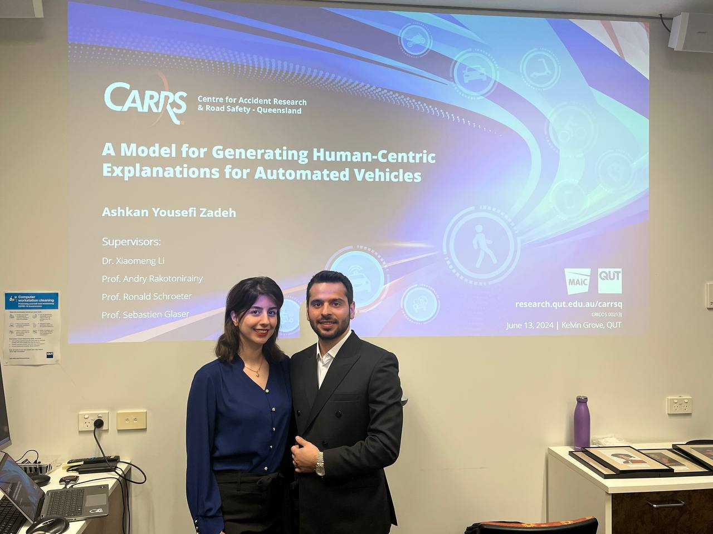
With my wife Zahra (Tina) Mehraban — PhD Candidate at AVR3 and QUT Centre for Robotics — at my PhD Confirmation. Tina is also a researcher at the centre, and we share a passion for advancing intelligent mobility and human-centred AI.
Supervision
My doctoral work is supervised by a multidisciplinary team across explainable AI, human-centred transport systems, and automated vehicle research.

Human Behaviour, Experimental Design, Data Analysis.
AVR3 profile

Human-Machine Interaction, Road Safety, Automated Vehicle Design
AVR3 profile
Intelligent Transport Systems, Automated Vehicle Design, Safety Deployment.
AVR3 profileResearch Life
From naturalistic driving studies to public demonstrations — research that happens on the road and in the community.
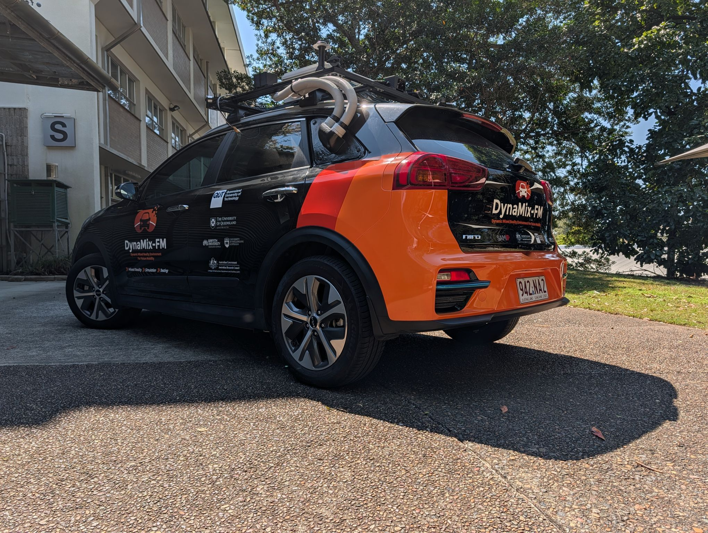
The instrumented Kia EV6 used for naturalistic driving data collection in my PhD study on explainable automated vehicle behaviour and human-centred XAI.
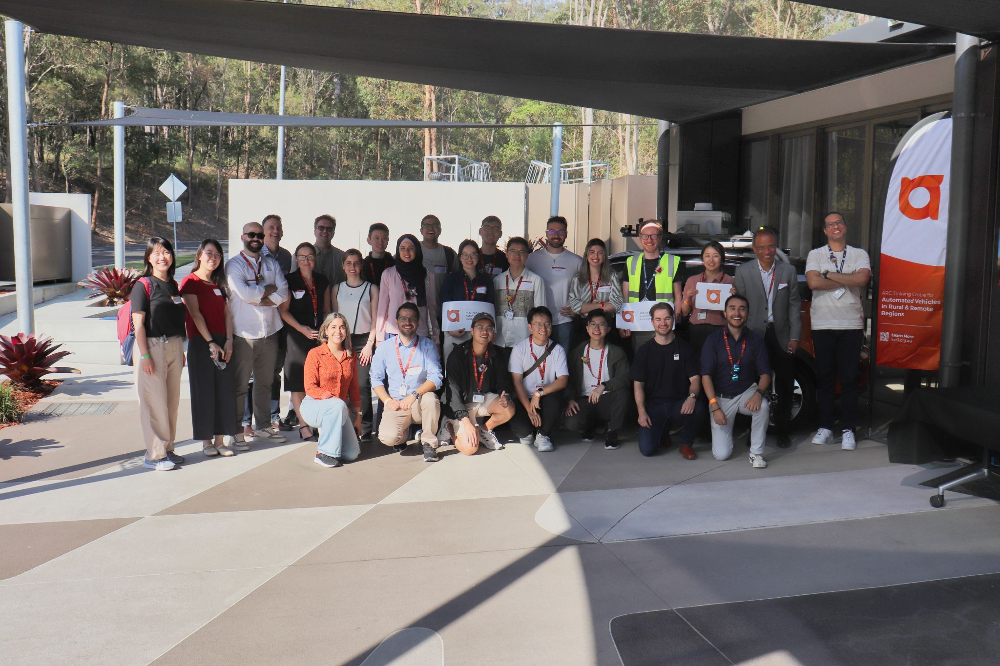
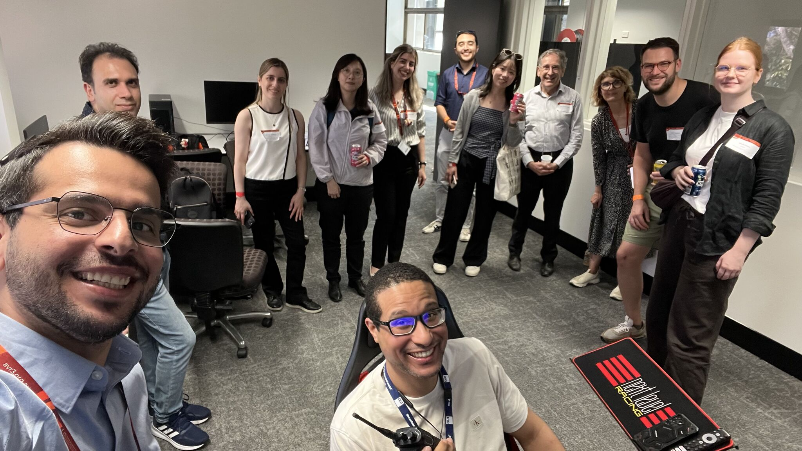

Research Interests
My research interests combine automated vehicle sensing, computer vision, language models, NLP, and human-centred AI into one explanation pipeline.
 01
01
Perception, scene understanding, sensor evidence, and driving context as the foundation for meaningful explanations.
 02
02
Language generation, linguistic building blocks, and structured explanation content for AV decisions.
03
Explanation design grounded in user needs, transparency, interpretability, and trust calibration.
Connects computer vision, vehicle state, and scene context to explanation-ready evidence.
How should AV decisions be represented, selected, and justified?
Which linguistic choices make explanations clearer and more actionable?
How do explanations affect attention, trust, and behavioural response?
How can explanation models support responsible autonomy in real contexts?
News
Top 10 weekly articles across automated vehicles, AI, LLMs, NLP, computer vision, and vision-language models — sourced from leading agencies and research institutions.
Publications
Recent work across natural language explanations, psycholinguistic XAI design, and intelligent control for automated driving.

Ashkan Yousefi Zadeh, Xiaomeng Li, Andry Rakotonirainy, Ronald Schroeter, Sebastien Glaser, and Z. Zhu.
Read preprint
Ashkan Yousefi Zadeh, Xiaomeng Li, Andry Rakotonirainy, Ronald Schroeter, and Sebastien Glaser.
Read paper
A. Yousefi Zadeh, A. Jamali, R. Mallipeddi, and H. Khayyam.
Read paper
Z. Mehraban, A. Yousefi Zadeh, A. Jamali, R. Mallipeddi, and H. Khayyam.
Read paperExperience
My experience combines doctoral research, engineering education, peer review, and technical committee activity.
Presented "PsyLingXAV: A Psycholinguistics Design Framework for XAI in Automated Vehicles" at the 3rd World Conference on eXplainable Artificial Intelligence in Istanbul — exploring how human-centred explanation design grounded in Psycholinguistics can improve AI transparency in real-world driving contexts. Conference highlights included a keynote by Wojciech Samek introducing SemanticLens, and a session on integrating XAI in industry processes by Sebastian Lapuschkin and Cosimo Fiorini. A heartfelt thank you to supervisors Xiaomeng Li, Andry Rakotonirainy, Ronald Schroeter, and Sebastien Glaser.
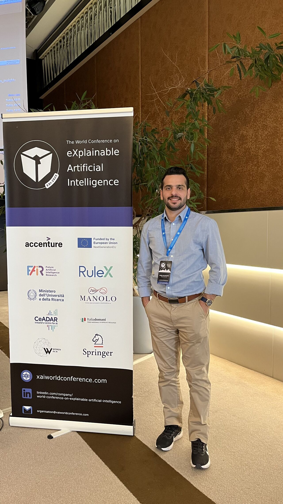
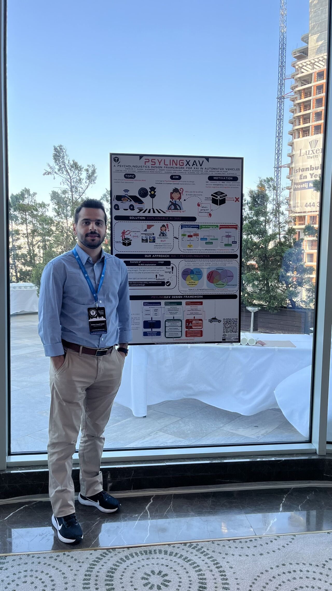
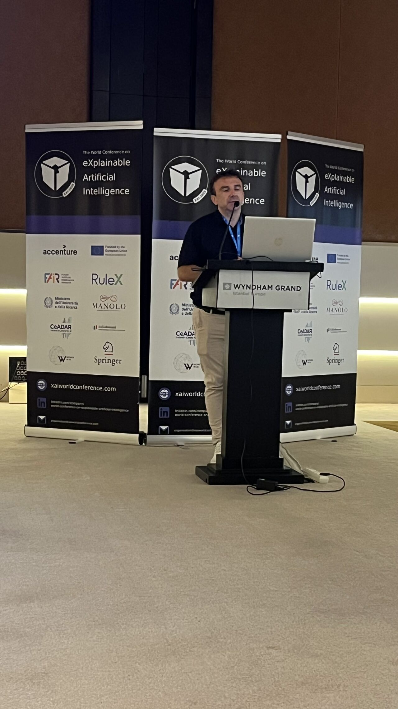
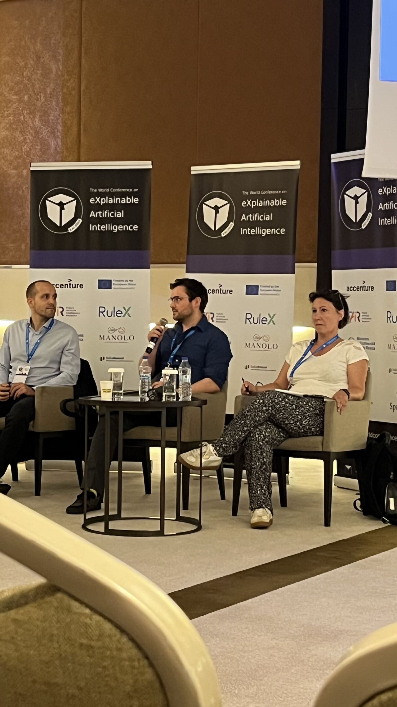
IEEE Consumer Technology Society.
IEEE Vehicular Technology Society.
Attended the Human-Centric AI-powered Autonomous Systems Summer School on an IEEE Scholarship. Had the privilege of meeting and learning from Distinguished Professor Saeid Nahavandi, FTSE, FIEEE — a world-leading expert in control engineering and robotics. An inspiring exchange that broadened my perspective on the future of human-centred autonomy.
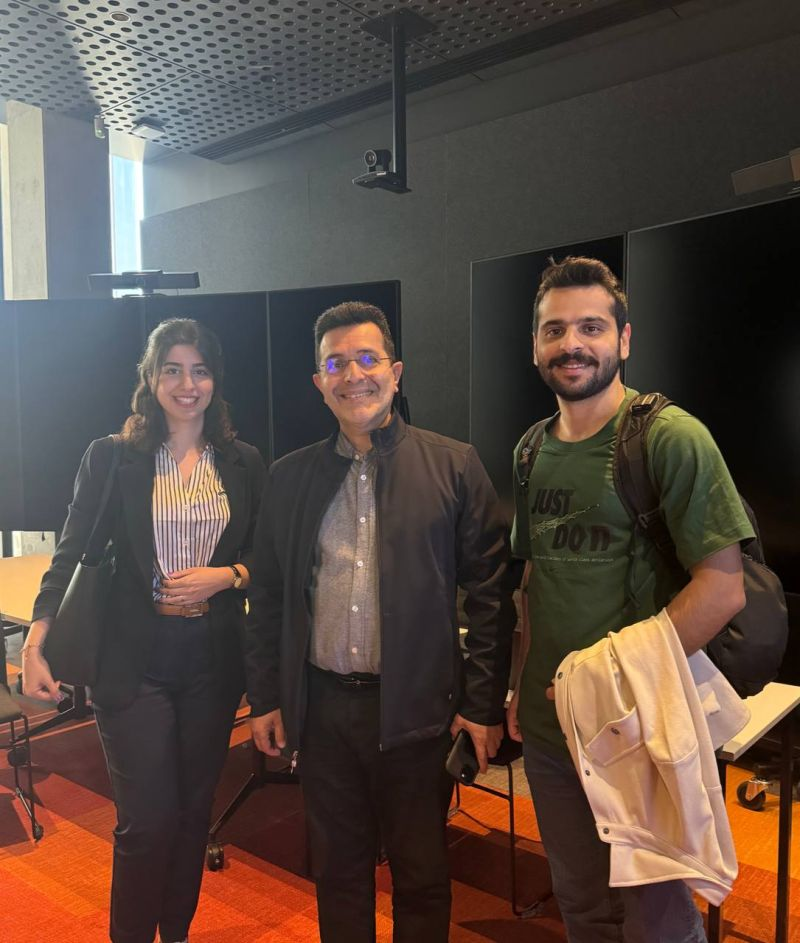
At the 2024 IEEE SMC Summer School on "Towards Human-Centric AI-Powered Autonomous Systems" at Swinburne University of Technology, Professor Chee Peng Lim delivered an insightful session on computational intelligence (CI)-based models for data analytics and decision-support. He demonstrated how artificial neural networks, fuzzy systems, and evolutionary algorithms can be harnessed for decision-support in industrial and healthcare settings — work I found deeply relevant to my own interest in fuzzy logic and online neuro-fuzzy systems.
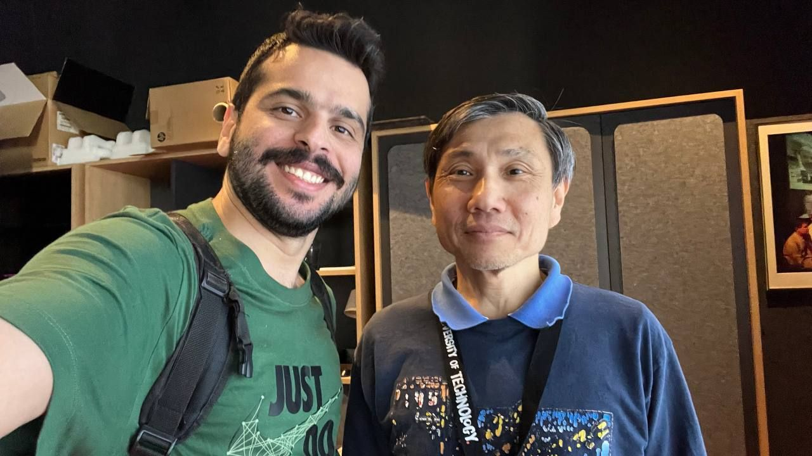
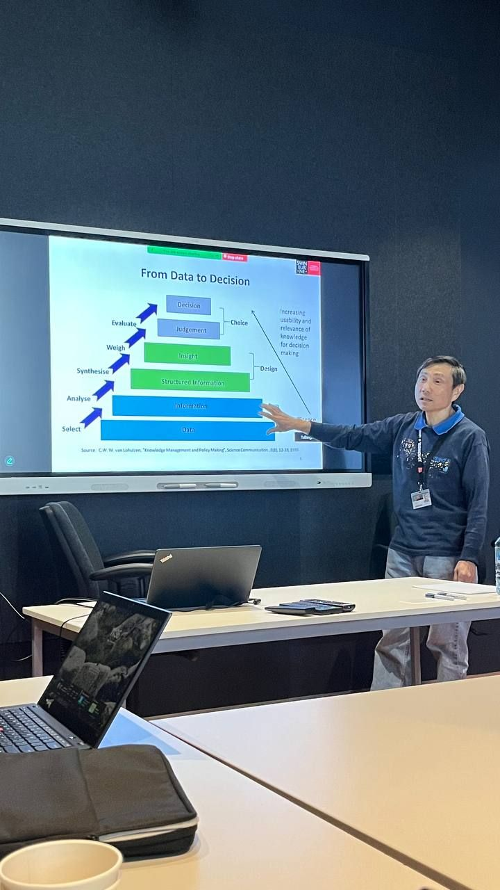
Also at Swinburne, Dr. Soo Beng Koh (许思铭博士) — who started his career at the Rover Advanced Technology Centre and led development of CAN bus for vehicles and DeviceNet for factory automation — delivered a captivating session on managing innovation. With 28 years of experience across Fortune 500 companies, academia, and startups spanning R&D, manufacturing, and new product development, his insights on technology leadership were both inspiring and thought-provoking.
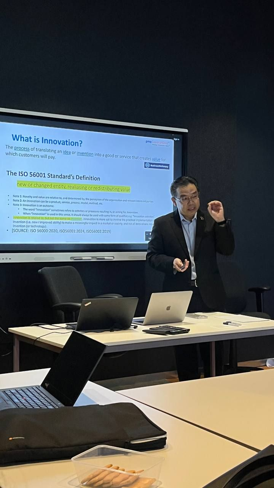
Teaching Computing and Data for Engineers at Queensland University of Technology.
Invited to speak on autonomous vehicles by the IEEE Vehicular Technology Society Student Branch Chapter at NSS College of Engineering. Engaging with bright and eager young minds, we explored the cutting-edge technologies behind autonomous vehicles, their potential to revolutionise daily life, and the ethical considerations they raise. A huge thank you to Anandu C for the invitation — moments like these reinforce the importance of sharing knowledge and sparking innovation worldwide.
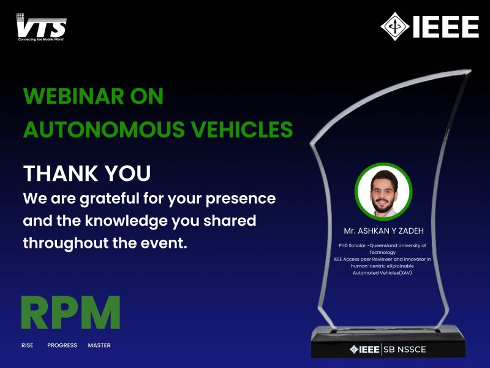
Participated in the MAIC–QUT Road Safety Research Collaboration monthly "AI and Road Safety" discussion — bringing together experts, researchers, and enthusiasts to explore how generative AI can revolutionise road safety. The online session fostered vibrant collaboration across academia, government, and industry, advancing groundbreaking research toward safer roads for all.
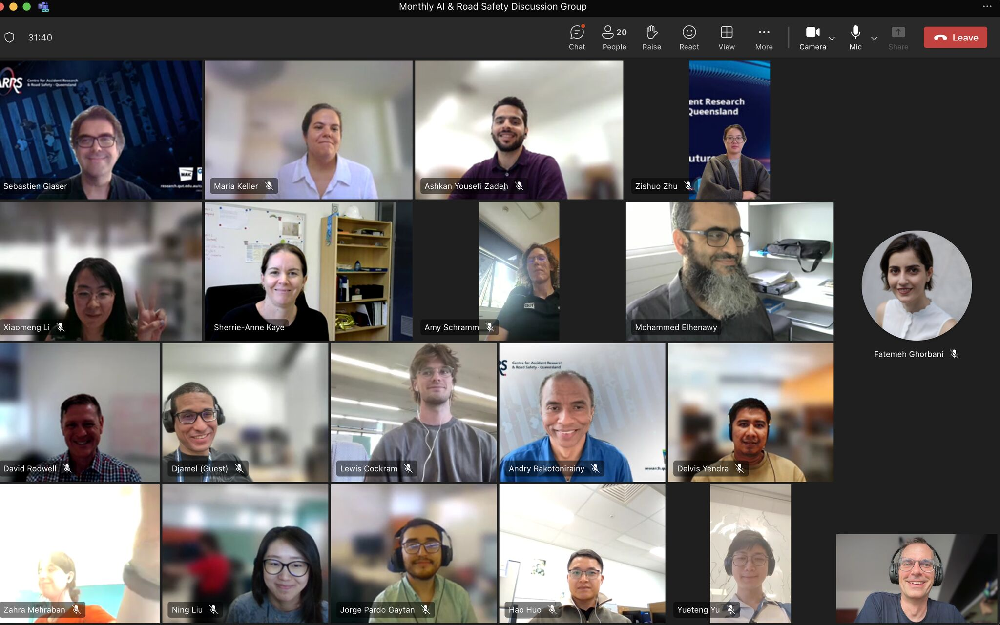
AVR3, formerly CARRS-Q, Queensland University of Technology.
Runner-up at QUT's Visualise Your Thesis (VYT) competition, which challenges graduate researchers to showcase their work in a striking and engaging digital format. Competing as a finalist from QUT's Faculty of Health, my entry was titled 'A Human-Centric eXplainable Automated Vehicle (XAV)' — presenting my XAI research to a broad, non-specialist audience through visual storytelling.
Participated in QUT's Nudgeathon — an electrifying two-and-a-half-day behavioural change competition where teams of undergrad and postgrad students, government advisors, and private sector professionals apply behavioural science principles to tackle real-life social problems. Teams of four develop proposals and present to expert judges from academia, government, and industry, with winning solutions submitted to government for potential adoption at Commonwealth or State level.
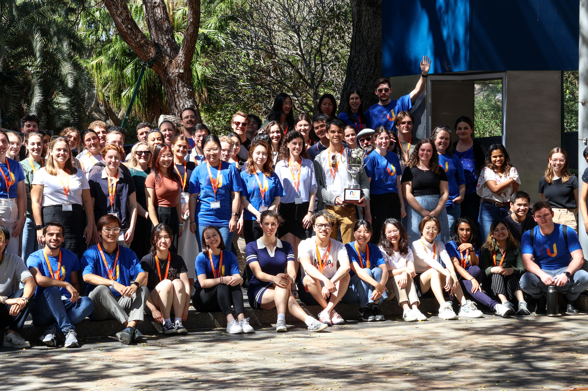
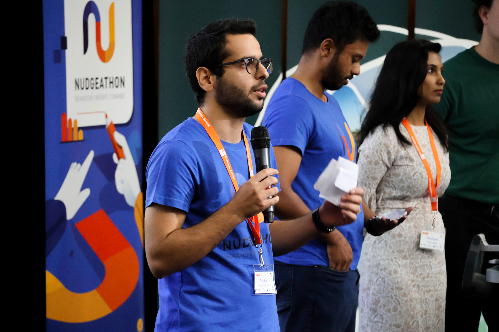
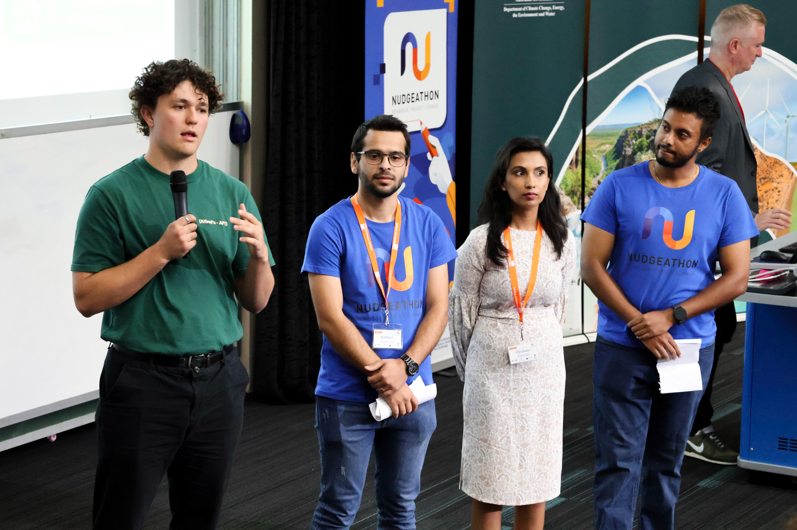
Reviewing for IEEE Transactions on Intelligent Transportation Systems and IEEE Access.
Server-side AI project development, deployment, and debugging at HeyvaAI.
Education and Awards
Computer science doctoral research built on mechanical engineering, dynamics, control systems, and intelligent mobility.
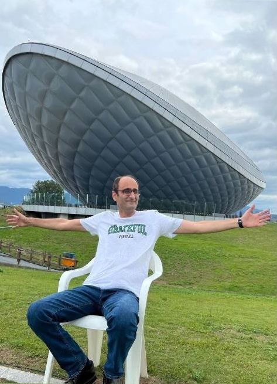
Proud Alumnus of the
University of Guilan
Research Fellow at
RMIT University
I still can't accept that you're gone. My heart feels unbearably heavy, and no words seem enough to describe this pain.
You were one of the rare people who genuinely changed the direction of my life. You guided me, believed in me, and opened doors I never imagined I could walk through. So many of the choices I made, the opportunities I found, and the person I've become today — I owe them to you.
And it wasn't just my career that you shaped. You introduced me to the love of my life — my wife Tina Mehraban. If it weren't for you, our paths might never have crossed. You brought us together at a moment when neither of us expected it. The life we have now, the happiness we share — this is a gift I will carry with me forever, a reminder that your impact reached far beyond academics; it touched the deepest parts of my life.
It breaks me to know that someone with so much wisdom, kindness, and brilliance is no longer here. You deserved so much more from life — more recognition, more peace, more time. I always thought I would see you again, maybe in Melbourne, maybe in Rasht, to thank you properly, to tell you how much your influence shaped my future and my confidence. But life didn't give us that chance, and that hurts in a way I can't even express.
I keep thinking about every moment you encouraged me, every piece of advice you gave, every spark of motivation you unknowingly created. You saw potential in me when I couldn't see it in myself. You changed my path, truly. And now you're gone, far too soon, leaving behind a silence that feels unreal.
Your lessons, your kindness, and your legacy will stay with me forever. Everything I achieve from this point on will carry a part of you. I wish you could see where your guidance has taken me. I wish I could thank you one more time. I wish life had been kinder to you.
Rest in peace, my dearest professor 🖤
Your memory will never fade, and your absence will always be felt.
I will miss you deeply, painfully, endlessly.
Contact
For research collaboration, XAI, autonomous vehicle explanation design, or academic enquiries, contact me directly.